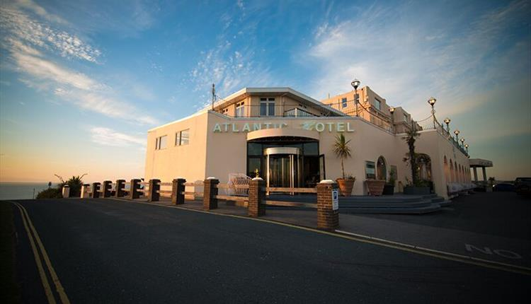

Atlantic Hotel

Atlantic Hotel
Set in 10 acres of headland, with sensational views of the North Cornish coast, sits one of Newquay’s best kept secrets.
Just a short stroll to the centre of Newquay, and minutes from some of the UK’s finest surf beaches, our iconic AA four star hotel blends classic glamour with modern luxury and a warmhearted welcome.
Packed with gorgeous original features (think marbled entrance, sweeping staircase and chandeliers) the hotel itself is just as stunning as the views. And every single room has a sea view, with the sound of crashing waves below to lull you to sleep.
Lounge by our sun-trap pool, dine at our award winning AA Rosette restaurant and then watch the sun go down over the Atlantic ocean with a cold glass of champagne on our fabulous terrace.
With all this and more, the Atlantic Hotel is the perfect choice for a decadent romantic getaway, storm watching weekend or seriously stunning wedding.
Treat yourself to a stay and let us transport you back to a time when leisure, luxury and elegance were everything.
SEA VIEW ROOMS & SUITES
Opening times and Prices
Opening times
Open everyday from the 1st Jan until the 31st of December but Christmas Day
Prices
Prices start at £70 up to £285 per room per night.